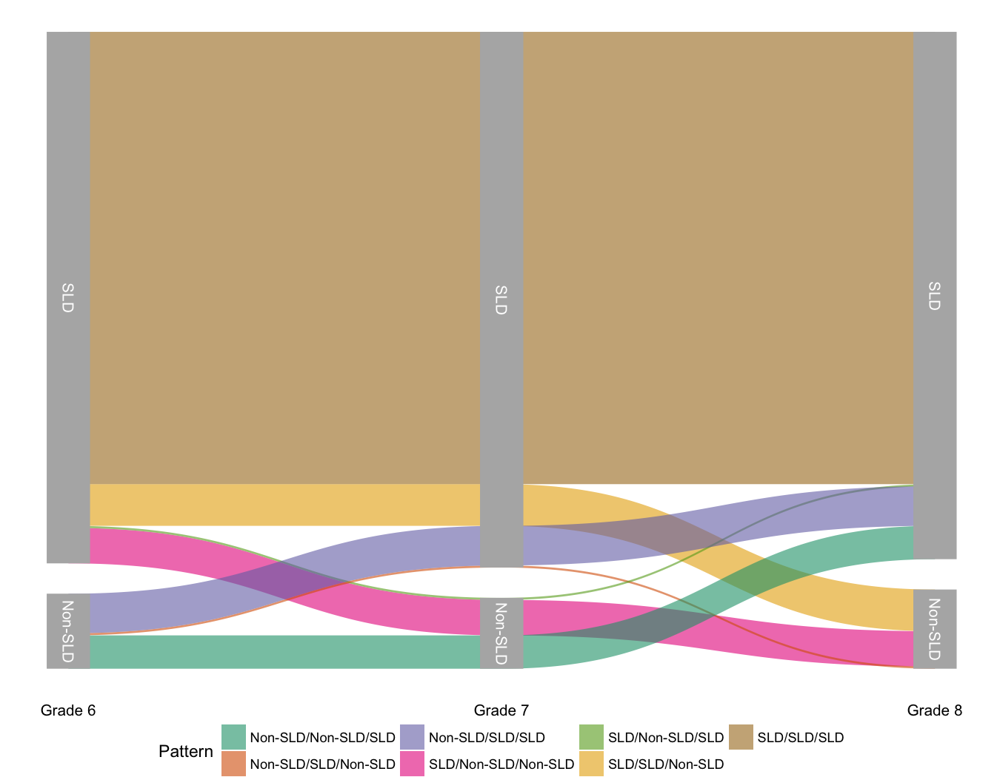
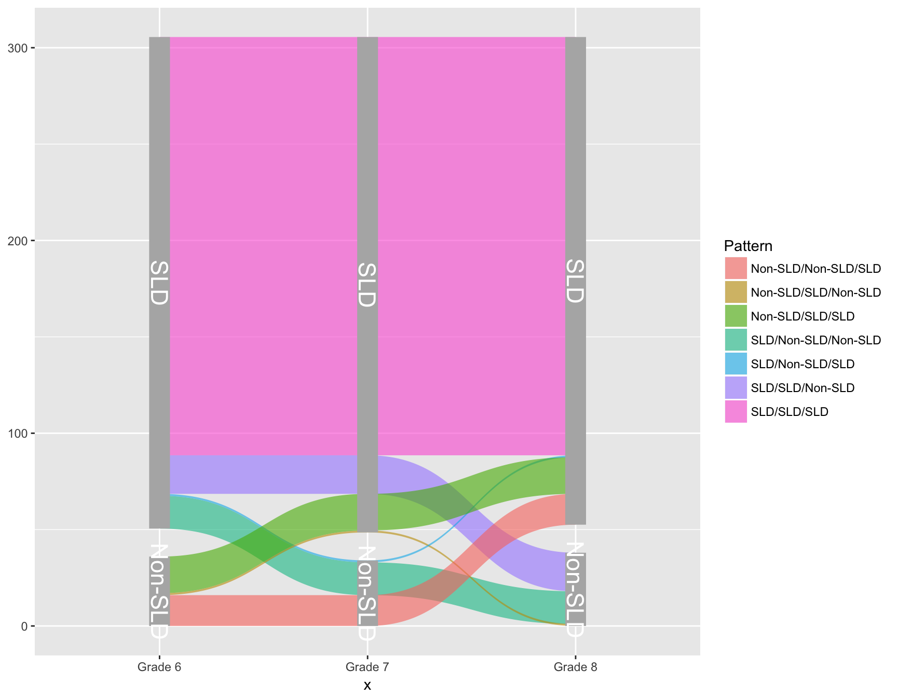

Alluvial Diagrams with ggforce
Contents
Today I wanted to quickly share my first real attempt at making an alluvial diagram. For those not familiar (and I wasn’t previously) an alluvial diagram is a type of flow plot that is essentially equivalent to a sankey diagram. The difference is that while sankey diagrams show flow for different categorical variables, alluvial plots show change over time. To produce the alluvial diagram below, I’ll be using the development version of the excellent ggforce package written by Thomas Lin Pedersen, who’s not only incredibly talented, but also a good follow on twitter.

Context
In schools across the country students who are struggling academically may be screened and evaluated to determine if they have a specific learning disability (SLD). Unfortunately, the protocols for making these determinations are not always consistent. We were interested, therefore, in examining the extent to which students shift into and out of the SLD classification over time. In this particular example, we only have data for middle school students (Grades 6-8), although similar research has examined other grades.
The data
The actual dataset is rather large, and contains statewide testing records for all students in the state of Oregon across Grades 6-8 for three cohorts. For the purposes of this blogpost, I first simulated new data (so I could share it here) using the synthpop package, which is pretty impressive and perfect for this sort of purpose (I unfortunately am not allowed to share the real data publicly). I then took a random sample of 5% of the students in the synthetic data so it wouldn’t be so large. The data are available here, and you can read the file in directly using the following block of code, (which also cleans up the names a bit and selects only the relevant variables).
library(tidyverse)
d <- read_csv("http://www.dandersondata.com/post/data/synthetic_data2.csv") %>%
janitor::clean_names() %>%
select(sid, grade, sld, ld33)
d
## # A tibble: 11,298 x 4
## sid grade sld ld33
## <int> <int> <int> <chr>
## 1 12931993 6 0 Never
## 2 5757142 6 0 Never
## 3 7720394 6 0 Never
## 4 7035071 6 0 Never
## 5 7782160 6 0 Never
## 6 8306796 6 0 Never
## 7 8213712 6 1 Always
## 8 3808246 6 0 Never
## 9 2539721 6 0 Never
## 10 6730043 6 0 Never
## # ... with 11,288 more rows
The sld column is a dummy vector indicating if the given student (sid) was identified with a specific learning disability in that grade (1) or not (0). The ld33 column has an odd name, but basically states if the student was always, never, or sometimes identified as SLD.
The alluvial plot
We first need to install the development version of ggforce.
devtools::install_github("thomasp85/ggforce")
Next, we need to do a bit of data prep. Below I:
* filter() for only students who were ever identified as SLD - i.e., I’m
eliminating students who were always identified as Non-SLD, because that group
encompasses the majority of students and makes the rest of the patterns difficult
to see.
Recode
ldandgradeso they are character vectors. This is not only helpful in making the plot look nice, but actually vital in getting it to produce (I failed over and over again because I skipped this step in my initial attempts).spreadthe data out so there’s a column specifying the ld status for each student in each grade.countthe number of unique patterns across grades. This will be used to provide the widths of the alluvial plot.mutateto create a new pattern variable that states, in a single variable, which “flow” students in that group were in.
Note - I saved this all in an object pd, which is a general convention I use
that stands for plot data.
pd <- d %>%
filter(ld33 != "Never") %>%
mutate(sld = ifelse(sld == 0, "Non-SLD", "SLD"),
grade = paste0("Grade ", grade)) %>%
spread(grade, sld) %>%
group_by(`Grade 6`, `Grade 7`, `Grade 8`) %>%
count() %>%
mutate(Pattern = paste(`Grade 6`, `Grade 7`, `Grade 8`, sep = "/"))
pd
## # A tibble: 7 x 5
## # Groups: Grade 6, Grade 7, Grade 8 [7]
## `Grade 6` `Grade 7` `Grade 8` n Pattern
## <chr> <chr> <chr> <int> <chr>
## 1 Non-SLD Non-SLD SLD 16 Non-SLD/Non-SLD/SLD
## 2 Non-SLD SLD Non-SLD 1 Non-SLD/SLD/Non-SLD
## 3 Non-SLD SLD SLD 19 Non-SLD/SLD/SLD
## 4 SLD Non-SLD Non-SLD 17 SLD/Non-SLD/Non-SLD
## 5 SLD Non-SLD SLD 1 SLD/Non-SLD/SLD
## 6 SLD SLD Non-SLD 20 SLD/SLD/Non-SLD
## 7 SLD SLD SLD 217 SLD/SLD/SLD
Now we’re getting close, but the actual format ggforce needs the data in is a
bit more complex. Luckily, the package provides a helper function. We just need
to tell it, basically, which columns we want along the x-axis.
library(ggforce)
pd <- pd %>%
gather_set_data(1:3)
pd
## # A tibble: 21 x 8
## # Groups: Grade 6, Grade 7, Grade 8 [7]
## `Grade 6` `Grade 7` `Grade 8` n Pattern id x y
## <chr> <chr> <chr> <int> <chr> <int> <chr> <chr>
## 1 Non-SLD Non-SLD SLD 16 Non-SLD/Non-SL… 1 Grade… Non-S…
## 2 Non-SLD SLD Non-SLD 1 Non-SLD/SLD/No… 2 Grade… Non-S…
## 3 Non-SLD SLD SLD 19 Non-SLD/SLD/SLD 3 Grade… Non-S…
## 4 SLD Non-SLD Non-SLD 17 SLD/Non-SLD/No… 4 Grade… SLD
## 5 SLD Non-SLD SLD 1 SLD/Non-SLD/SLD 5 Grade… SLD
## 6 SLD SLD Non-SLD 20 SLD/SLD/Non-SLD 6 Grade… SLD
## 7 SLD SLD SLD 217 SLD/SLD/SLD 7 Grade… SLD
## 8 Non-SLD Non-SLD SLD 16 Non-SLD/Non-SL… 1 Grade… Non-S…
## 9 Non-SLD SLD Non-SLD 1 Non-SLD/SLD/No… 2 Grade… SLD
## 10 Non-SLD SLD SLD 19 Non-SLD/SLD/SLD 3 Grade… SLD
## # ... with 11 more rows
And now we’re all ready to go. The set of functions ggforce provides to
produce the alluvial plot is geom_parallel_sets. The basic plot can now be
produced with
ggplot(pd, aes(x = x, id = id, split = y, value = n)) +
geom_parallel_sets(aes(fill = Pattern), alpha = 0.6) +
geom_parallel_sets_axes(axis.width = 0.1, fill = "gray70") +
geom_parallel_sets_labels(color = 'White', size = 3)

And we’re basically there!
A bit of cleaning up will make the plot even a bit nicer. Here I’ve used
theme_void to remove most of the extras like axes, but added back in the
labels on the x-axis. I’ve also repositioned the legend, and it’s debatable
whether it’s really needed at all. Also, the
scale_x_discrete(expand = c(0.05,0.05)) argument is important and removes a
bunch of white space on the left and right margins.
ggplot(pd, aes(x = x, id = id, split = y, value = n)) +
geom_parallel_sets(aes(fill = Pattern), alpha = 0.6) +
geom_parallel_sets_axes(axis.width = 0.1, fill = "gray70") +
geom_parallel_sets_labels(color = 'White', size = 3.5) +
scale_fill_brewer(palette = "Dark2") +
labs(x = "", y = "") +
scale_x_discrete(expand = c(0.05,0.05)) +
theme_void() +
theme(
axis.text = element_text(size = 12),
axis.text.x = element_text(size = 10),
axis.text.y = element_text(size = 0),
legend.position = "bottom",
legend.direction = "horizontal"
)
Author Daniel Anderson
LastMod 2017-11-29